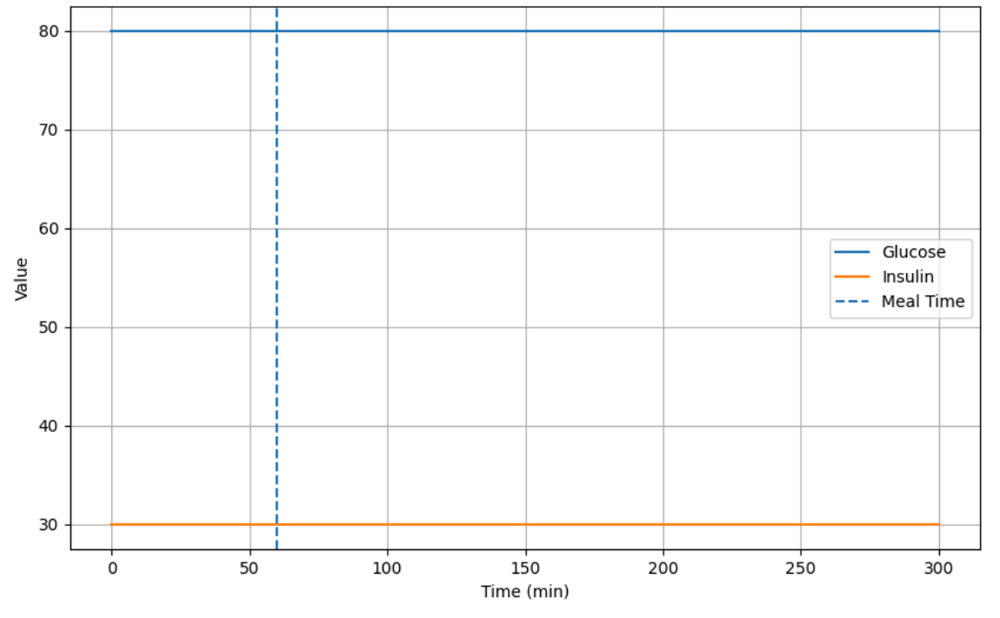
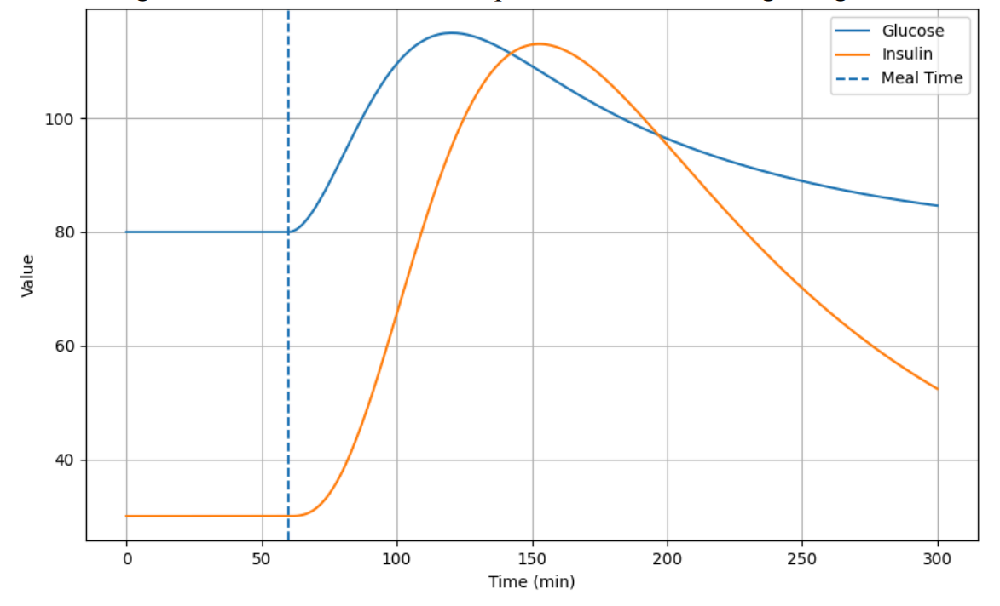
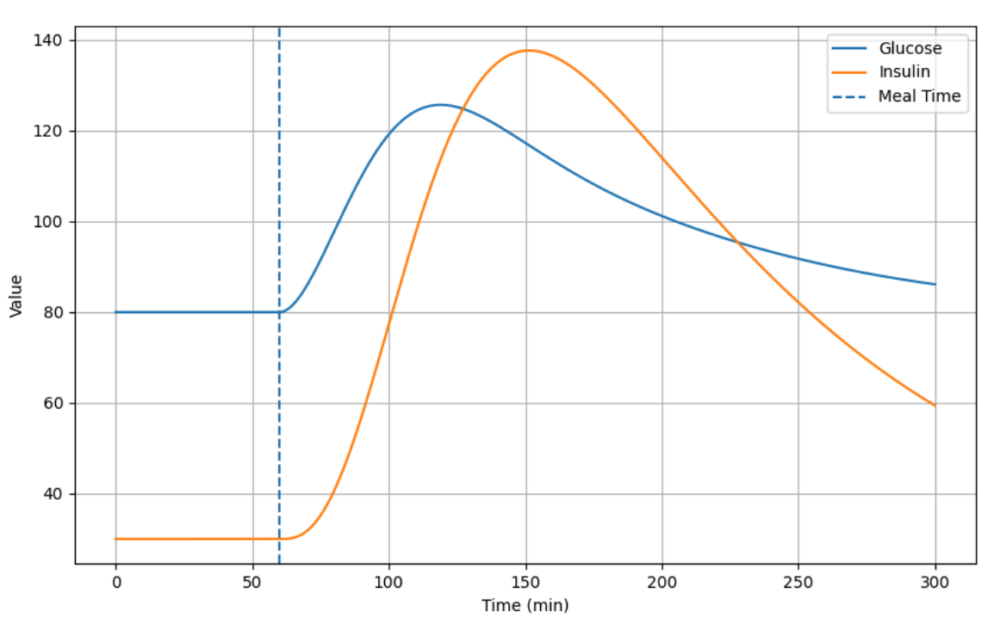
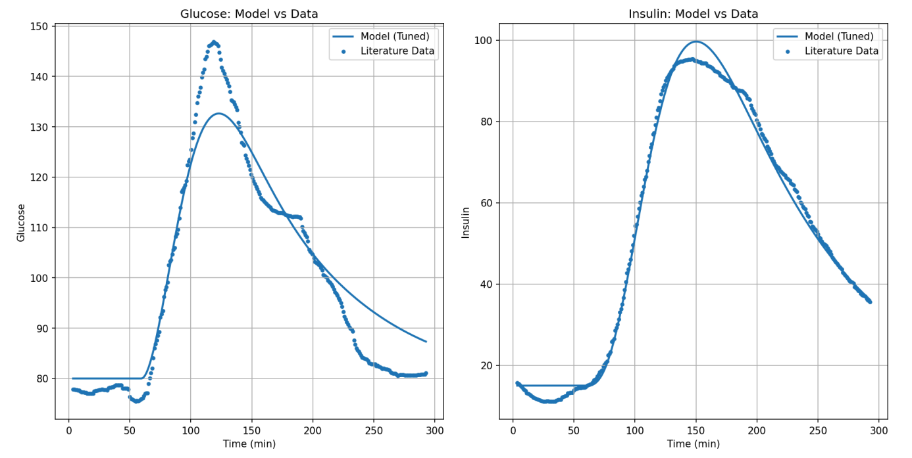
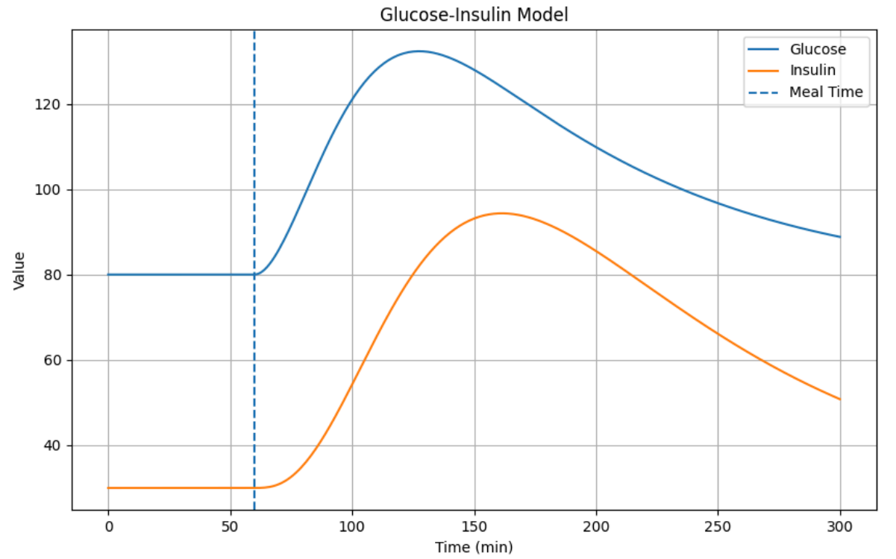
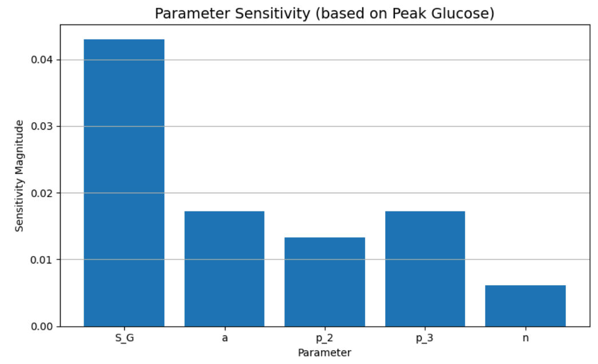
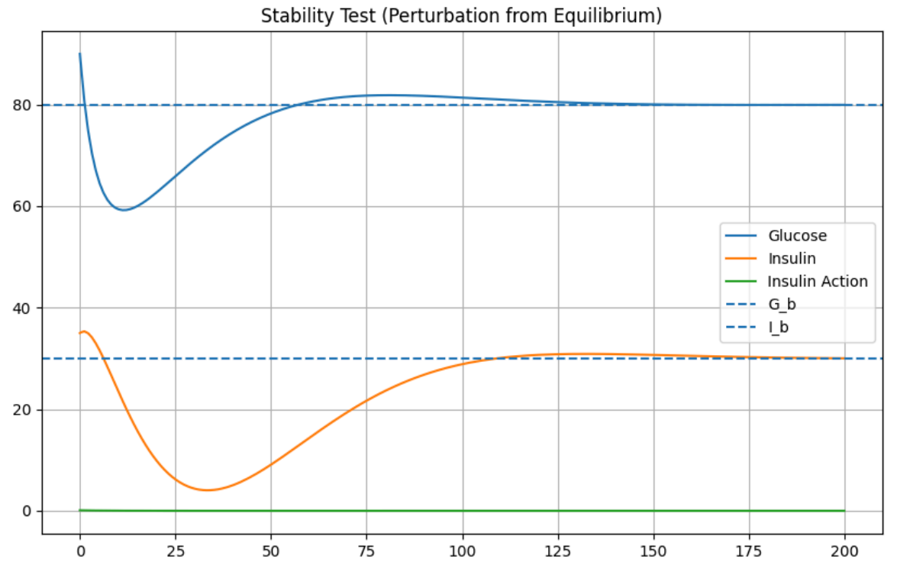
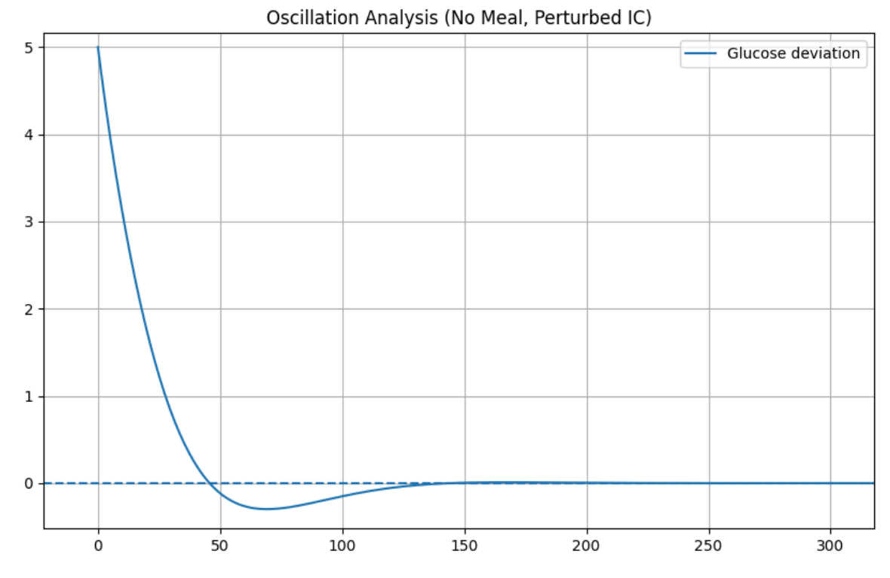
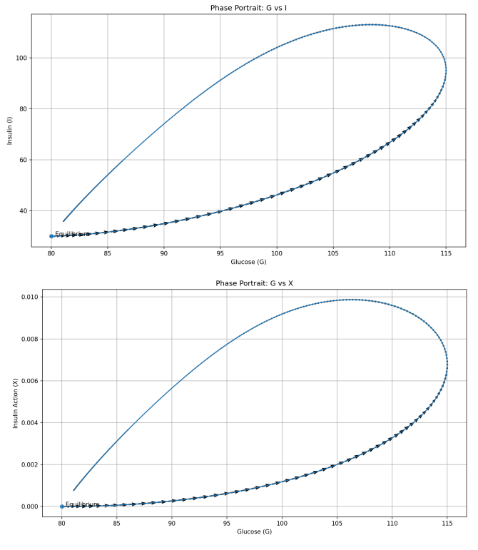

Simulations of the glucose–insulin system demonstrated physiologically realistic responses following meal intake. Blood glucose levels increased rapidly after carbohydrate consumption, reached a peak, and gradually returned toward baseline. Insulin exhibited a delayed but coordinated response, rising in response to elevated glucose before decaying back to basal levels.
Under fasting conditions (no meal input), the system remained at steady state, with glucose and insulin maintained at baseline values. This confirms that the model does not exhibit drift or instability in the absence of external input. Increasing carbohydrate intake resulted in higher glucose peaks and stronger insulin responses, demonstrating that the model captures the expected relationship between meal size and postprandial dynamics.

Figure 1: Simulated glucose and insulin trajectories after no meal intake.

Figure 2: Simulated glucose and insulin trajectories after meal intake of 45 grams of carbs.

Figure 3: Simulated glucose and insulin trajectories after meal intake of 60 grams of carbs.
Model outputs were compared with published glucose and insulin response curves. The simulated trajectories showed strong agreement with literature, including comparable peak magnitudes, realistic timing of peak responses, and appropriate return to baseline.
These results indicate that the model reproduces key physiological characteristics of glucose regulation and aligns well with experimentally observed behavior.
Parameter estimation produced simulated trajectories that closely matched extracted experimental data. The optimization converged after approximately 2000 iterations, achieving a low final loss value and balanced fitting across both glucose and insulin signals.
The fitted model accurately captured both the amplitude and temporal dynamics of physiological responses.

Figure 4: Model fit compared to extracted experimental data.
Reducing the parameter representing pancreatic insulin response resulted in higher glucose peaks, slower recovery, and reduced insulin levels. These changes reflect impaired insulin secretion and demonstrate how disruptions to feedback regulation lead to prolonged hyperglycemia.

Figure 5: Effect of reduced insulin response on glucose dynamics.
Figure 6: Glucose and insulin trajectories after meal intake of 45 grams of carbs.
Sensitivity analysis showed that glucose effectiveness had the greatest influence on system behavior, significantly affecting peak glucose levels and recovery rate. Other parameters, including those governing insulin dynamics, had smaller but consistent effects.

Figure 7: Normalized sensitivity magnitude of each parameter.
Parameter variation studies demonstrated that changes in parameter values produced proportional and physiologically consistent responses, confirming the robustness of the model.
Linearization of the system around the equilibrium point revealed eigenvalues with negative real parts, indicating asymptotic stability. Perturbation simulations further confirmed that the system returns to equilibrium following small disturbances.

Figure 8: System response to perturbations from equilibrium.
Eigenvalue analysis revealed complex conjugate pairs, indicating damped oscillatory behavior. The system exhibited a natural frequency and long oscillation period, with oscillations decaying over time.
Phase portraits further confirmed this behavior, showing trajectories spiraling toward equilibrium, consistent with a stable system exhibiting damped oscillations.

Figure 9: Oscillatory dynamics of the system.

Figure 10: Phase portrait showing convergence to equilibrium.